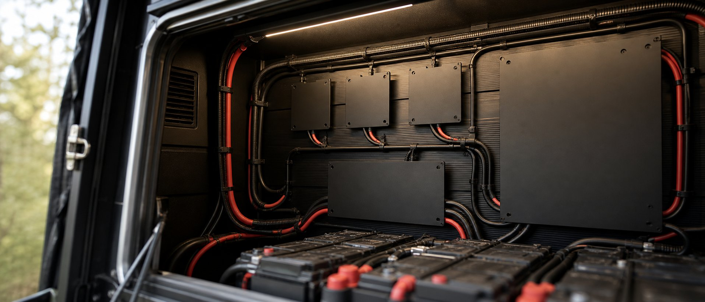

Wat is er aan de hand?
2026 wordt het doorbraakjaar van de natrium-ion accu. CATL — de grootste accufabrikant ter wereld — is in juli gestart met massaproductie, en ook BYD en Europese spelers als het Zweedse Altris en het Nederlandse Starbatch doen mee. Het idee: vervang schaars lithium door natrium, gewoon keukenzout-grondstof die duizend keer vaker voorkomt.
De beloftes zijn niet mis. Natrium-ion cellen werken door tot zo'n dertig graden onder nul, zijn van zichzelf veiliger, en de grondstof kost bijna niets. Prijzen liggen nu rond de 70 tot 100 dollar per kilowattuur — al bijna gelijk aan LiFePO4 — en experts verwachten richting 2030 nog eens een halvering.
De eerlijke kanttekening
Er is één groot maar: natrium-ion cellen zijn zwaarder en groter voor dezelfde hoeveelheid stroom. Zo'n 120 tot 160 wattuur per kilo, waar goede lithiumcellen 250 halen. Voor een rijdende bus telt elke kilo, en in een krap keukenkastje telt elke centimeter. Bovendien: 12V-accu's op natriumbasis die je zó in je camper schroeft, zijn er nog nauwelijks. De eerste productie gaat naar elektrische auto's en thuisbatterijen.
Wie nu een camper bouwt, koopt gewoon een LiFePO4-accu. Die is bewezen, overal verkrijgbaar en de prijzen dalen al jaren. Wachten op natrium-ion kost je een of twee seizoenen vrijheid, en tegen de tijd dat natrium-drop-ins volwassen zijn, is je LiFePO4 nog lang niet op — die gaat tien tot vijftien jaar mee.
Waarom dit tóch goed nieuws is
Ten eerste: prijsdruk. Elke natrium-cel die van de band rolt, drukt de prijs van LiFePO4 verder omlaag. De accu die twee jaar geleden €900 kostte, koop je nu voor minder dan de helft — en die trend houdt aan.
Ten tweede: de winter. Het grote zwakke punt van LiFePO4 is laden onder nul graden. Natrium-ion heeft daar geen enkele moeite mee. Voor wintersporters en fulltimers kan dat over een paar jaar de doorslag geven. Hou het in de gaten — wij doen dat ook.
Zelfs de fabrikanten stappen over
Dat lood-tijdperk echt voorbij is, zie je ook bij de grote merken. Volkswagen ruilde deze zomer de standaard AGM-accu van de Grand California in voor LiFePO4: bijna 40% meer bruikbare stroom, vijf keer langere levensduur, en een zonnepaneelpakket erbij. Precies de rekensom die wij in LiFePO4 of AGM? maken — en die jij voor jouw bus kunt laten doen door de samensteller.
Veelgestelde vragen
Kan ik een natrium-ion accu nu al in mijn camper gebruiken?
Het kan, maar het is pionieren: er zijn nog nauwelijks kant-en-klare 12V-modellen met goed batterijbeheer, en je laadregelaar en B2B-lader hebben er meestal nog geen laadprofiel voor. Voor de meeste zelfbouwers is dat het gedoe nog niet waard.
Wordt mijn LiFePO4-accu straks waardeloos?
Nee. LiFePO4 blijft de standaard voor campers zolang natrium-ion zwaarder en schaarser is in 12V-formaat. En een accu die tien jaar meegaat, hoef je je sowieso pas ver na 2035 af te vragen wat zijn opvolger wordt.
Bronnen
Voor dit stuk gebruikten we onder meer: